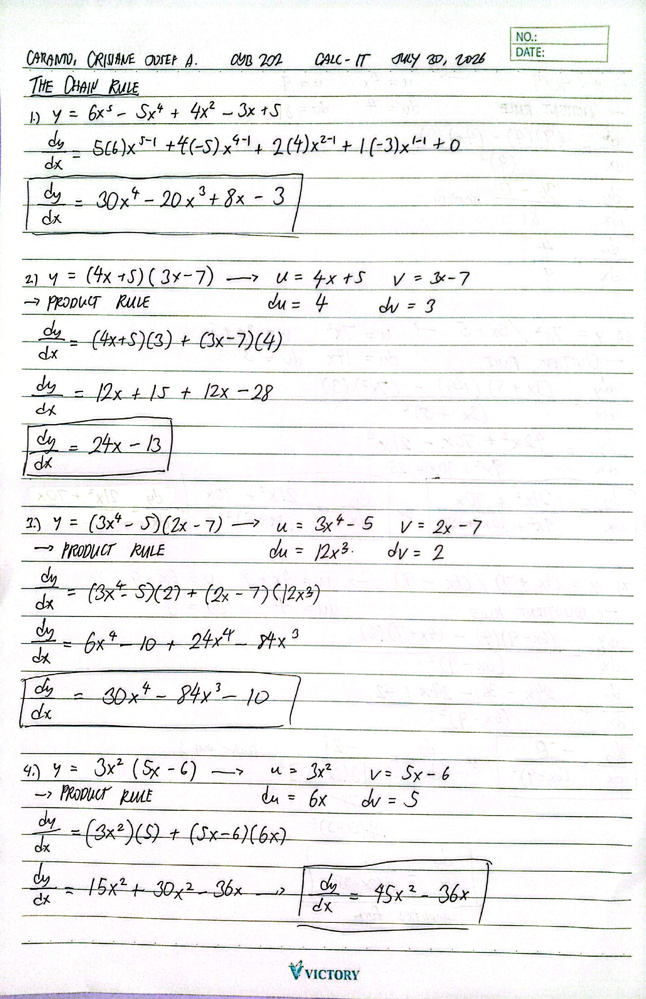
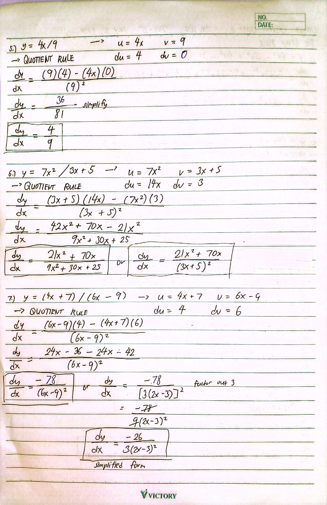
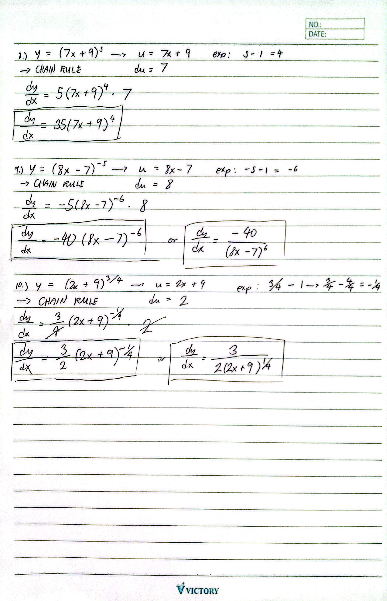

The Chain Rule Activity
Score: 18/20
Description
An activity covering the application of the Chain Rule, Product Rule, and Quotient Rule in differentiating functions.
Objectives
Reflection
During the activity, I knew that I will be having a bit of a difficult time in completing the activity since the Chain Rule is new to me. It was reflected in my score as I got an 18/20. With this, I knew that practicing my Chain Rule - aside from the Product Rule and Quotient Rule - skills became one of my priorities in learning Calculus since later on, it would be helpful in doing integration.